IAQ is not compared against general builders. On a cleanroom or hi-tech facility award the shortlist is assembled from firms that can carry controlled environment engineering and process critical utilities from design through construction to commissioning. Every firm here was checked against its own corporate page, named third party reporting, or both. Firms were cut when we could not evidence that they bid for this work in Malaysia or the region, however large their global name.
On the 7 August review Nabilah Radzi went through this landscape with us. Four confirmations from the client now sit on top of the research, and where they contradict a researched score the client’s word wins.
Named by the client as the primary direct competitor: it monitors and mirrors IAQ’s strategies. Its website is weak, but its SEO, video content and traffic are strong, and it is public listed. Beat it on the things it cannot copy quickly: the registry, the numbers and the media pipeline.
The client corrected our calibration: Sunway is not just a bar-setter, it actively takes over IAQ clients because its capital and manpower are larger, without being a specialist. IAQ’s counter is the general contractor role for mission-critical projects, held with cleanroom-specialist depth, proven by case studies.
In Malaysia IAQ provides the same services as Exyte, and wins as the cleanroom specialist against an MNC contractor. The client named IAQ’s one obvious lack against Exyte: the media pipeline. Interior videos, case studies and news volume close it.
IAQ competes for the general contractor contract on every mission-critical project in the industry. The site’s technical breakdown must outclass every firm on this board so the specialist also reads as the safest general contractor.
Ranked by how much each firm should change what IAQ builds, not by size and not by website quality alone. A firm can matter because it threatens us, because it shows us the target, or because it warns us. Both scores are Brand Method’s own assessment, not published data. Website score rates the site as a sales asset for winning a cleanroom package. Threat score rates the commercial risk to IAQ.
Publishes Dry Room® for lithium ion and organic EL. The only real product in the set.
Names batteries as a target market. No project verified anywhere.
Not verified in Chinese or English sources.
No battery or EV project found in any source.
Renewable page is solar only. Battery runs through a US sister company.
Battery is a stated sector, but nothing individual is published.
| # | Firm | Headquarters | Site | Threat | Why it ranks here |
|---|---|---|---|---|---|
| 1 | Exyte | Stuttgart, Germany | 6 | 10 | The only firm here that is both the category leader and already operating in Malaysia, with offices in Penang, Kuala Lumpur, Melaka and Johor. Client-confirmed 7 Aug: IAQ provides the same services locally and wins as the cleanroom specialist; the one visible gap on IAQ’s side is the media pipeline. |
| 2 | 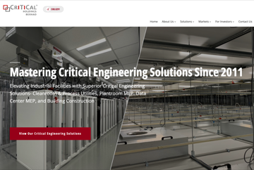 Critical Holdings Berhad | Bayan Lepas, Penang | 5 | 9 | The Malaysian firm a local client names first. It already publishes quantified scale and is winning nine figure packages, so it is the domestic benchmark IAQ has to pass rather than match. |
| 3 | 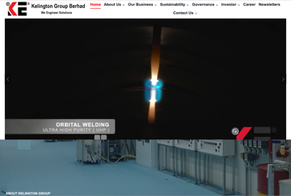 Kelington Group Berhad | Shah Alam, Selangor | 4 | 8 | Client-confirmed 7 Aug as the primary direct rival: it monitors and mirrors IAQ. A listed peer whose site is investor-first, yet its SEO, video and traffic are strong. The warning and the rival in one firm. |
| 4 | 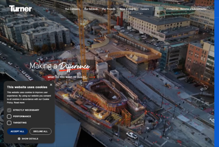 Turner Construction | New York, USA | 9 | 1 | It will never bid against IAQ, which is precisely why it is safe to copy. Its projects page is the structural target for our registry, and the single clearest model of what good looks like. |
| 5 | 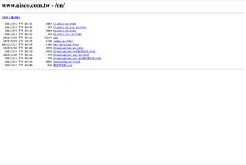 United Integrated Services | Taipei, Taiwan | 2 | 7 | The proof that scale and web presence are unrelated. Close to a mirror of IAQ on scope, with a Singapore beachhead, and the risk that a fab owner brings its Taiwanese supply chain into a regional project. |
| 6 | 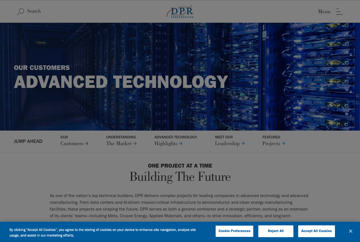 DPR Construction | Redwood City, USA | 8 | 1 | It solves the one problem that could stop the registry being built at all: how to publish confidential work. Without this convention, legal review deletes entries and the registry never ships. |
| 7 | 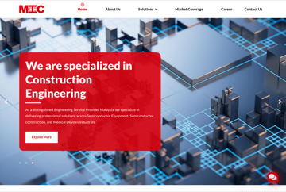 Marketech International Sdn Bhd | Kuala Lumpur and Penang | 3 | 5 | Locally incorporated since 2009 with Taiwanese fab relationships, which matters on Taiwan funded projects in Malaysia. Real in market presence, but we could not verify the depth of local cleanroom delivery. |
| 8 | 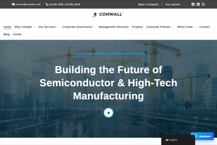 Conwall Construction Industries | Sungai Jawi, Penang | 5 | 5 | The smallest firm here that still beats most of the field online. It shows a Penang contractor can publish real project data without a large budget, which removes the excuse. |
| 9 | 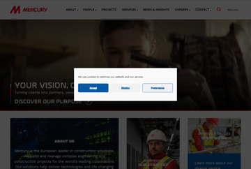 Mercury | Dublin, Ireland | 7 | 1 | The fairest page for page comparison in the whole set: same three sectors, same specialist position, similar size of story to tell. The closest thing to a target state. |
| 10 | Sunway Construction Group | Selangor, Malaysia | 3 | 7 | Client-confirmed active threat, 7 Aug: it takes over IAQ clients on capital and manpower without being a specialist. Its site still publishes no project registry, so the web is where IAQ outclasses it. |
| 11 | 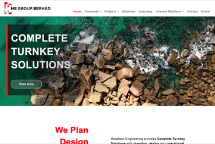 HE Group Berhad | Puchong, Selangor | 3 | 3 | Overlaps on the electrical and hook up slice rather than the cleanroom itself, so it competes on parts of a package rather than the whole one. |
| 12 | INTECH E&C | Hanoi, Vietnam | 4 | 4 | Relevant to regional expansion rather than the home market. Worth watching because its project pages are better than most of the Malaysian field. |
| 13 | 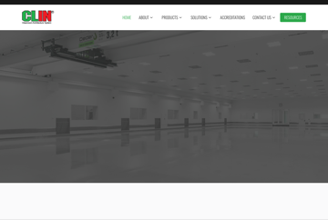 Cleanroom Industries Sdn Bhd | Prai, Penang | 3 | 1 | A component manufacturer rather than a contractor. It is here to mark the edge of the set, so nobody mistakes a supplier for a rival. |
Every homepage below is a live capture taken on 4 August 2026, in the order of importance above. Nothing is a mockup and nothing is retouched. Where a cookie banner or an error state appears, that is what the site served us.
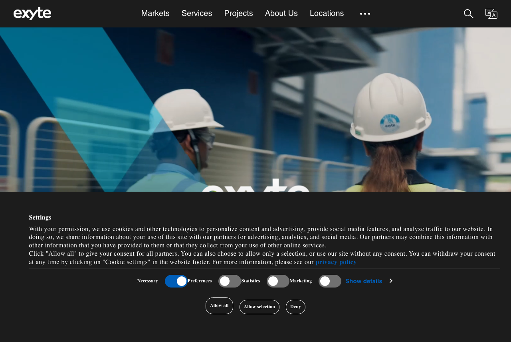
Why it ranks here. The only firm here that is both the category leader and already operating in Malaysia, with offices in Penang, Kuala Lumpur, Melaka and Johor. It is the default shortlist entry for a multinational investor, and its weakness is a gap we can take.
Strong architecture, hollow proof. Its References page carries no individual project entries, verified by our own fetch.
Why it ranks here. The Malaysian firm a local client names first. It already publishes quantified scale and is winning nine figure packages, so it is the domestic benchmark IAQ has to pass rather than match.
Publishes over 1,000,000 sq ft of cleanroom on its about page, then stops. Scale without a registry.
Why it ranks here. Client-confirmed 7 Aug as the primary direct rival: it monitors and mirrors IAQ’s strategies. A listed peer that went through exactly the transition IAQ is going through.
Investor first, client second, no projects and no case studies, yet strong SEO, video content and traffic. Public listed. Beat it where it cannot follow quickly: the registry and the media pipeline.
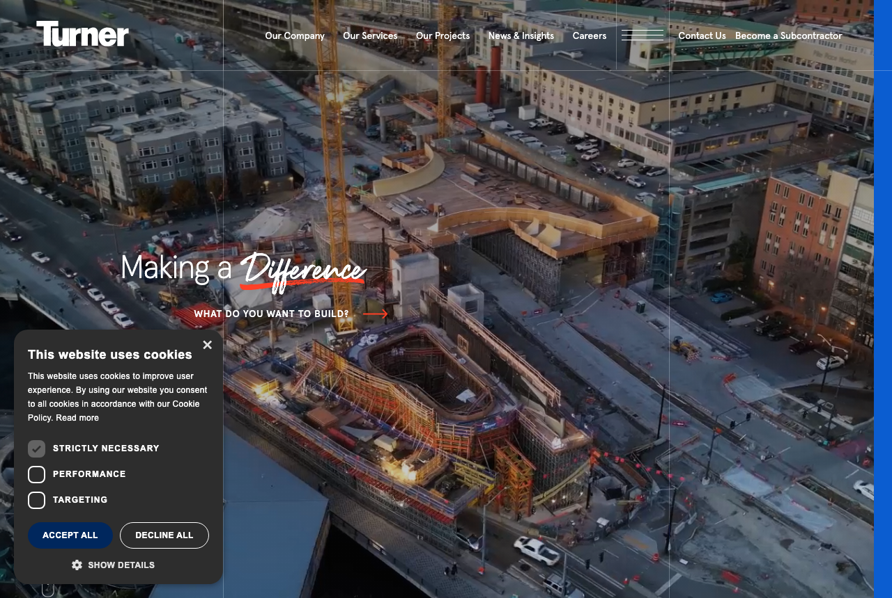
Why it ranks here. It will never bid against IAQ, which is precisely why it is safe to copy. Its projects page is the structural target for our registry, and the single clearest model of what good looks like.
Keyword search plus five filter groups. Every card carries area, storeys, services and a real photograph.
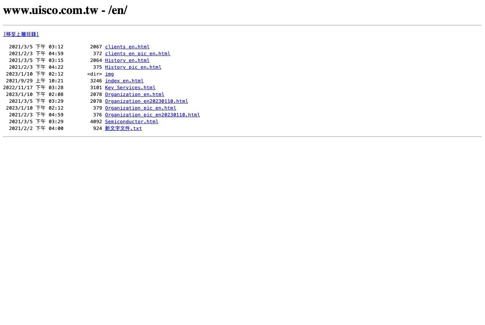
Why it ranks here. The proof that scale and web presence are unrelated. Close to a mirror of IAQ on scope, with a Singapore beachhead, and the risk that a fab owner brings its Taiwanese supply chain into a regional project.
NT$9.069 billion 2025 net profit, and a site with image menus, no projects and no statistics.
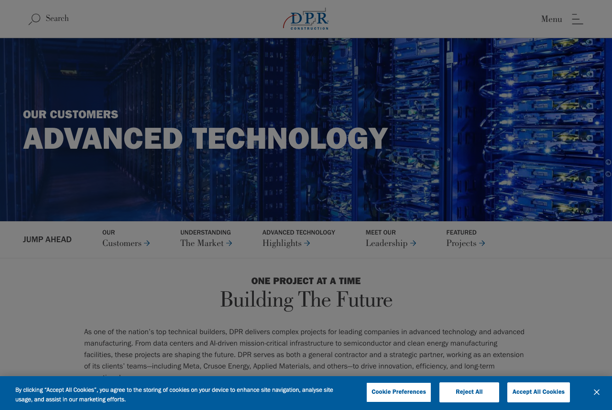
Why it ranks here. It solves the one problem that could stop the registry being built at all: how to publish confidential work. Without this convention, legal review deletes entries and the registry never ships.
Publishes NDA work under outcome titles with real scope beneath, a convention JE Dunn uses too.
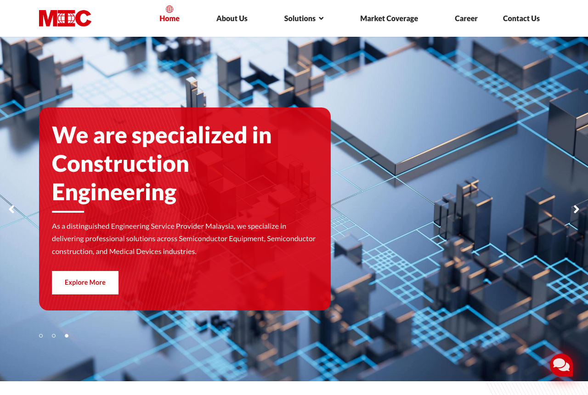
Why it ranks here. Locally incorporated since 2009 with Taiwanese fab relationships, which matters on Taiwan funded projects in Malaysia. Real in market presence, but we could not verify the depth of local cleanroom delivery.
Explicit about ownership and offices. No portfolio, no case studies, no scale figures.
Why it ranks here. The smallest firm here that still beats most of the field online. It shows a Penang contractor can publish real project data without a large budget, which removes the excuse.
Publishes real projects with durations and areas. Punches well above its size.
Why it ranks here. The fairest page for page comparison in the whole set: same three sectors, same specialist position, similar size of story to tell. The closest thing to a target state.
Cleanly structured specialist positioning. Not a bidder in this market.
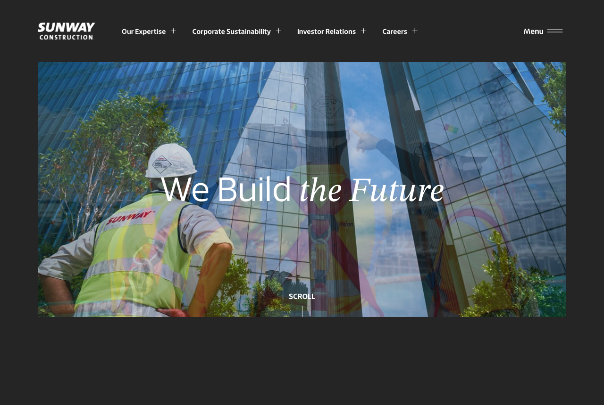
Why it ranks here. Client-confirmed active threat, 7 Aug: it takes over IAQ clients on capital and manpower, without being a specialist. At RM1.75 billion contract scale it still publishes no project registry.
Wins offline on scale, invisible online. IAQ answers with the general contractor role, specialist depth and a registry Sunway cannot match.
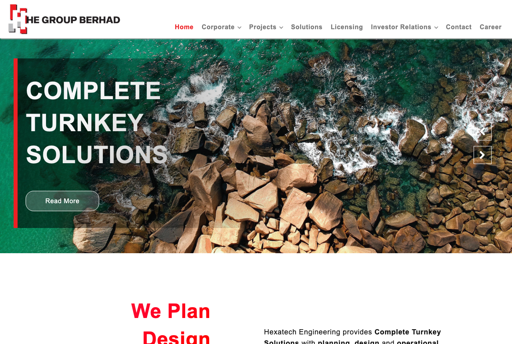
Why it ranks here. Overlaps on the electrical and hook up slice rather than the cleanroom itself, so it competes on parts of a package rather than the whole one.
Clear scope pages, no proof layer.
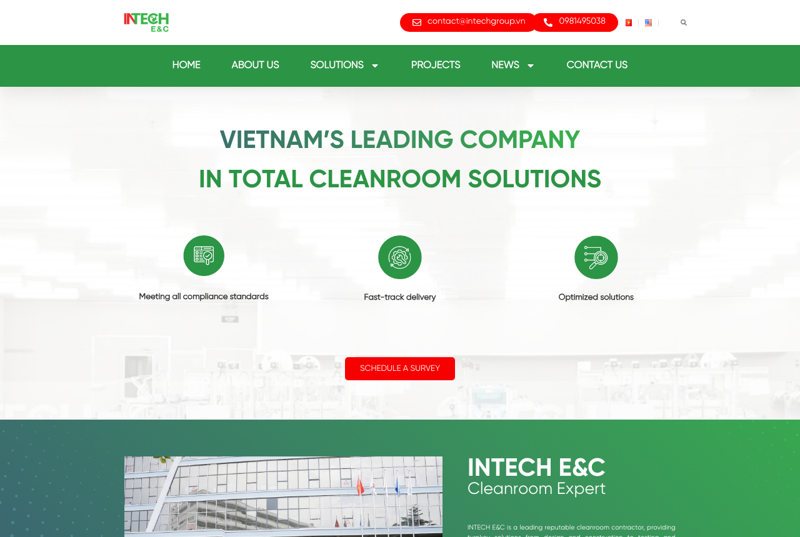
Why it ranks here. Relevant to regional expansion rather than the home market. Worth watching because its project pages are better than most of the Malaysian field.
Vietnam’s strongest counterpart. Decent project pages, national relevance only.
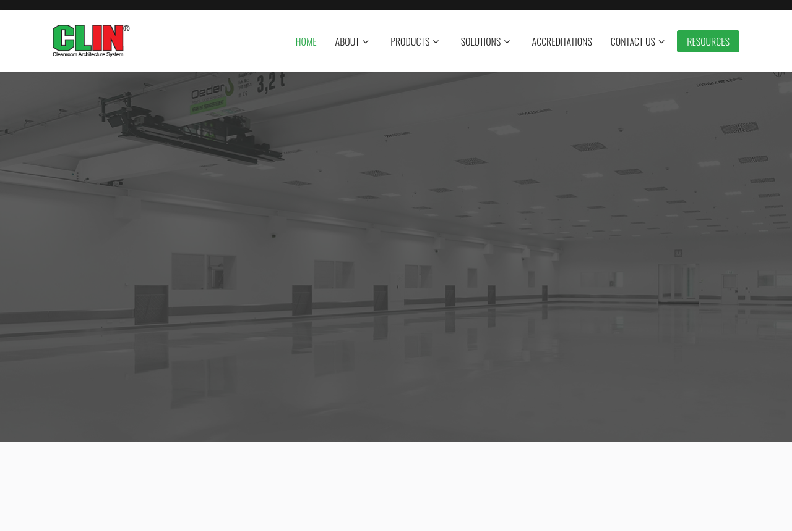
Why it ranks here. A component manufacturer rather than a contractor. It is here to mark the edge of the set, so nobody mistakes a supplier for a rival.
Clean product site. The boundary marker, not a rival.
These nine firms compete for the same awards. None carries a website score, because none was run through the same ten point rubric as the thirteen ranked above. Several of their sites were opened during this research and what we saw is recorded in the exposure column, but an observation is not a score and it is not presented as one. Every one has now been researched to entity, registry, filing and contract level, and they are ordered by threat rather than by size. Threat is Brand Method’s own assessment of commercial risk to IAQ, not published data. Where a figure could not be evidenced it is marked not verified rather than estimated, and every inference is labelled as one.
Sources: Acter corporate site and overseas achievements page, TPEx filings, Q1 2026 results, Taipei Times 25 June 2024. Two circulating figures are wrong and should not be reused: the NT$767.39bn FY2025 revenue claim is a misread of an L&K article where 767.39億 means NT$76.7bn, and the NT$460bn backlog figure is unsupported by any company disclosure.
Sources: Kajima FY2025 results deck, ACRA and SSM registry records, koas.com.sg, intl-fe.com. Corrected before use: IFE is International Facility Engineering, not Innovative.
Sources: Takasago FY2026 results, SSM registry, ttemalaysia.com.my, tte-net.com. Checked and disproved: there is no MBO, tender offer or delisting. They did a 2-for-1 stock split effective 1 October 2025. The Rapidus connection is reported by Japanese media, not confirmed by any first party contract announcement.
Sources: TWSE filings, H1 2026 results, ACRA registry, lkeng.com.tw. Figure caveat: the widely quoted SGD 20bn Micron Singapore number is an analyst estimate of total fab value to 2029, not L&K’s contract value, which is not verified. Ticker note: 6139 is L&K. Acter is 5536 and United Integrated Services is 2404. Many sources conflate all three.
Sources: Taikisha Integrated Report 2025, FY2026 results, SSM registry, taikisha-group.com. Conflict noted: EMIS lists 90 staff for the Malaysian entity in 2019 against the group site’s 44. The group site is treated as authoritative.
Sources: Sum Technology corporate site, Bursa ACE listing disclosures, IPO analysis, contract announcements April and June 2026. Their site blocks automated fetch but loads in a browser, which is why it carries no website score.
Sources: JGC FY2025 Outline of Financial Results (14 May 2026), JGC and Exyte news releases 28 August 2025, JGC High-Tech Industries page, JGC (Malaysia) company profile, Exyte Malaysia locations page. Inference, labelled: the reason Malaysia and Singapore are excluded is our reading. No source states that Nixyte does not cover Malaysia, it simply never lists it.
Sources: Gamuda 3Q FY2026 results release, Gamuda press releases May 2024 and August 2025, The Edge Malaysia April 2026, Structure Research May 2025, CIMB Research. Not verified: any Gamuda cleanroom, semiconductor, pharma or F&B capability.
Sources: AMTS About and Locations pages, AMTS Malaysia expansion blog, CIDB Malaysia coverage. Inference, labelled: their US satellite map reads as a fab list, which strongly suggests the client base, but AMTS publishes no confirmation.
Sites worth copying. Two of the three never bid against IAQ, which is exactly why they are safe to learn from.
The depth bar. A real filterable registry with quantified project cards. Copy the structure, ignore the company.
Solves the confidentiality problem. Publishes NDA work under outcome titles with real scope beneath.
The fairest page for page analogue. Same three sectors, same specialist position. Not a bidder here.
Taiwanese and Japanese specialists that follow their fab clients into the region.
Strong architecture, hollow proof. Its References page is a landing page, and that is the gap to attack.
Vietnam’s strongest counterpart. Decent project pages, national relevance only.
The single strongest exhibit. NT$9.069 billion 2025 net profit, and a website with image menus and nothing to show.
The firms a Malaysian client can name without thinking, and the listed peers on the same IPO path.
The Malaysian firm to beat on both fronts. Publishes quantified scale and is winning nine figure packages.
Small but publishes real projects with durations and areas. Punches above its size online.
Client-confirmed primary direct rival, 7 Aug: it monitors and mirrors IAQ. Investor first, client second, no projects, no case studies, yet strong SEO, video and traffic. The trap and the threat in one.
Locally incorporated with Taiwanese fab relationships. Site carries no portfolio and no scale figures.
Clear scope pages, no proof layer. Owns the electrical and hook up slice, not the cleanroom.
Client-confirmed 7 Aug: takes over IAQ clients on capital and manpower, without specialist depth. RM1.75 billion contract scale and still no project registry, so the web is the ground IAQ wins on.
Included to mark the edge of the set.
Clean product site for a component manufacturer. The boundary marker, not a rival.
Each one is tied to a specific, verified competitor behaviour rather than to a generality.
Turner’s projects page carries a keyword search plus five filter groups, and every card carries name, location, area, storeys, services applied and a real photograph, across at least nine pages. Exyte’s References page, the leader’s equivalent, is one header image, a paragraph and a contact button. Publishing what the leader does not is the single item that wins the comparison on its own.
DPR publishes confidential work as “Confidential Semiconductor Manufacturing Campus Expansion” with the real scope beneath it: areas, durations, gown room conversions, utility plant upgrades. JE Dunn uses the same convention, so it is established practice. This lets IAQ run a full public registry without naming one client, which is non negotiable on a listing track. Build it title first, so legal review never becomes a reason to delete an entry.
Exyte’s References page carries no cleanroom classes. UIS publishes no project data at all. Conwall names ISO 14644 in capability copy but not project by project. Publish per project: ISO 14644 class achieved, built up area, cleanroom area, sector, country, delivery model and programme duration. That is procurement grade information, and it turns a brochure into a qualification document.
Critical Holdings publishes over 1,000,000 sq ft of cleanroom constructed and commissioned on its own about page. UIS, with NT$9.069 billion of 2025 net profit, publishes no statistics anywhere, and Sunway Construction at RM1.75 billion contract scale publishes no registry. Numbers plus a registry beats numbers alone, which is exactly where Critical Holdings stops.
Kelington, a listed peer, has no projects portfolio, no case studies and no homepage statistics, while carrying a full governance, sustainability and investor architecture. The listing pulled its site toward the analyst and away from the buyer. IAQ is on the same path and will face the same pressure. Capability, sectors and projects sit above investor relations in the navigation, and the homepage speaks to a facility owner.
Everything below is a gap in this research, stated plainly so nothing here is mistaken for fact.
| Gap | Detail |
|---|---|
| “Carrington” | The 7 Aug transcript renders the client’s named primary rival as Carrington, Kington and Kellington in different lines. Every signal (listed, Malaysian, cleanroom-adjacent, strong traffic) matches Kelington Group Berhad, and this audit treats it as Kelington, but the name is flagged for reconfirmation with the client rather than assumed silently. |
| dpr.com returned 403 | We never loaded the filter interface, so we repeat no filter counts for it. The confidential titling convention was verified a different way, through live project pages. |
| sum.technology returned 403 | We cannot confirm it is Sum Technology Berhad’s live corporate site and make no claim about it. |
| crbgroup.com returned 403 | One reason CRB was cut from the set entirely. |
| Nine sites never assessed | JGC, Taikisha, L&K, Kajima, Takasago, Acter, Gamuda, Sum Technology and AM Technical Solutions carry no website score. None is presented as a benchmark. |
| Acter’s Malaysian entity | Rests on the group’s 2025 annual report and trade listings, not a corporate page we could load. Entity naming across the Taiwan and Shanghai listings is inconsistent. |
| Takasago Malaysia founding date | Group history says November 1980. The entity’s own profile says 1982. Unresolved. |
| Marketech Malaysia depth | The full cleanroom, MEP, DI water, gas and chemical scope belongs to the Taiwan parent. We could not verify the Malaysian company delivers all of it, and found no named Malaysian project. |
| L&K in Malaysia | The Singapore record is proven. No Malaysian entity was verified. |
| Bid lists are not public | Wherever this document says a firm would appear on the same shortlist, that is inference from scope and geography, not a sighted tender list. |